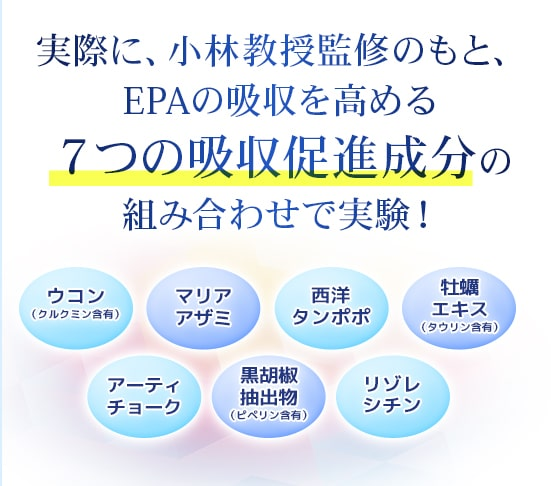

｢血管の異常収縮｣とは、突然血管が痙攣するようにギュッと縮んで血流を滞らせる現象です。
長年の乱れた生活習慣が招く動脈硬化と違い、食生活もきちんとしている方、スポーツをしている方、健康診断の結果に問題がない方にも前触れなく突然発症することがわかっています。
また、心筋梗塞や脳梗塞などの血管病による突然死で毎年5万人以上の患者さんが亡くなっていると言われていますが、これら突然死のほとんどに関わると言われているのが「血管の異常収縮」なのです。
実際に「血管の異常収縮」を発症したヒトの脳血管はどうなってしまうのでしょう？
広範囲で血管がギュッと縮み、
重篤な状態に！
異常収縮のメカニズムを世界で初めて発見した山口大学医学部医学科 小林誠教授とその研究チームによって、「血管の異常収縮」の抑制を目的に研究開発された唯一のEPA。それが「小林式EPA」です。
「血管の異常収縮」のメカニズム解明から２年、研究の道に進んでからおよそ20年を経て、世界で初めて抑制できる物質「小林式EPA」を突き止めたのです。
さらに「小林式EPA」は「血管の正常収縮（※）」には影響を与えずに、「血管の異常収縮」のみを抑えることも確認されました。それはまさに理想的とした治療法の発見でした。
※正常収縮は血流・血圧を一定に保つ人体に必要な収縮
-
-
正常な状態
-
血管の異常収縮が起きた状態
-
異常収縮した血管にEPAを加えると、元通りに。
-
薬は病気になった｢あと｣にしか服用できないのに対して、小林式EPAは食品成分だから「事前」の摂取が可能。
継続的に小林式EPAを摂取することで、突然襲い掛かる｢血管の異常収縮｣を未然に防ぐことができるのです。
だからこそ、従来の精製法によるEPAでは抑制効果が弱かったのです。
さらに、小林教授の研究室で実際に「血管の異常収縮」を抑制することを確認したものだけが「小林式EPA」と呼ばれています。
これにより、小林教授と研究チームはこの研究で「血管予防に効果を有する食品組成物」として特許を取得しています。
加齢などによって肝機能が衰えていると、脂質の吸収に必要な胆汁酸の分泌が低下して、吸収不全を起こし、せっかくEPAを摂ったとしても体に吸収されにくいという可能性があるのです。

もともとの血液中のEPA量を0とし、使用前と比較して
4時間後と6時間後に増加したEPAの量を表しています。
- 小林教授監修のもと、30～60代の方(計20名)に｢EPAのみ｣と｢EPA＋7つの吸収促進成分｣をそれぞれ摂取していただいたあと血液中のEPA量を測定しました。
EPAのみを摂取した場合に対し、EPAと一緒に「7つの吸収促進成分」を摂取した場合を比べてみると、体内吸収量が4時間後には約2倍、6時間後には約1.5倍に増えたという結果が得られました。

- 「小林式EPA」が血管の異常収縮を劇的に抑制する。
- 「小林式EPA」は一般的なEPAと違い、生の青魚そのままの立体構造を保っている。
- 「小林式EPA」と「７つの吸収促進成分」を同時に摂取するとEPA吸収量が2倍になる。
「小林式EPA」は２つの特許に支えられている。
「小林式EPA」が大事なキーワードです。
自信をもっておすすめします。
血管の収縮は、大きく分けると
「正常な収縮」と「異常な収縮」の2種類あります。
- 血管の正常収縮とは
- 血管は収縮と弛緩（しかん）を繰り返し、血流や血圧を一定に保つようにしています。
これが「血管の正常収縮」で、生命の維持にはなくてはならないものです。
血管を動かす筋肉組織（血管平滑筋細胞）内のカルシウムイオン濃度によって調節され、そのメカニズムは生物学の常識として知られています。

ゆえに、医学界では原因不明の難病と恐れられ、治療法も確立されていませんでした。
だから、これまでは「正常収縮」の
メカニズムに働く「見せかけの治療法」しか
ありませんでした。
そこで、医師であった小林教授は
この理想の治療法を実現すべく、
研究の道に進んだのでした。
小林教授研究チームの研究実績

山口大学医学部医学科
先進予防医学講座
小林 誠教授（特命）
1980年九州大学医学部卒業後、同大学循環器内科入局。
米国医師国家試験（ECFMG）にも合格。
1985年に世界で初めて、カルシウムイオンの測定に成功する。その後渡米し、ペンシルベニア大学、バージニア大学、九州大学の助教授を経て、1996年より山口大学で教授職を務める。
2021年4月からは山口大学医学部の先進予防医学講座の特命教授を務める。
世界に先駆けて、血管病による突然死の主因となる「血管の異常収縮」の原因分子を発見し、そのメカニズムも解明。さらに特殊な立体構造のEPAによる阻害効果も発見。現在も『血管病の撲滅』を掲げ、日々研究を続けている。
-
1985年 / カルシウムイオンの測定に成功
- 正常な筋収縮を起こす血管平滑筋細胞内のカルシウムイオン濃度の異常上昇が、「血管の異常収縮」を引き起こす要因であると考えた小林教授は、カルシウムイオンの測定に世界で初めて成功。世界屈指の学術雑誌『Science』にて論文を発表し、世界の注目を集めました。
-
2000年 / ｢血管の異常収縮｣の
メカニズム解明に成功 -
 小林教授と研究チームは、度重なる研究の末、2000年、世界で初めて「血管の異常収縮」のメカニズムを解明しました。そして、SPC（スフィンゴシル・ホスホリル・コリン）という脂質が「血管の異常収縮」を引き起こしていることを突き止めたのです。
それは、生物学の常識であったカルシウムイオンによる血管の収縮とはまったく違うメカニズムで起きていました。さらに、原因物質であるSPCは、細胞膜の構成成分から簡単に作り出されてしまうため、カルシウムイオンによる血管の収縮とはまったく違う「誰にでも血管の異常収縮が起きる可能性がある」ことが明らかになったのです。
小林教授と研究チームは、度重なる研究の末、2000年、世界で初めて「血管の異常収縮」のメカニズムを解明しました。そして、SPC（スフィンゴシル・ホスホリル・コリン）という脂質が「血管の異常収縮」を引き起こしていることを突き止めたのです。
それは、生物学の常識であったカルシウムイオンによる血管の収縮とはまったく違うメカニズムで起きていました。さらに、原因物質であるSPCは、細胞膜の構成成分から簡単に作り出されてしまうため、カルシウムイオンによる血管の収縮とはまったく違う「誰にでも血管の異常収縮が起きる可能性がある」ことが明らかになったのです。
SPCによって引き起こされる広範囲の異常収縮！
実際に、SPCが「血管の異常収縮」を引き起こすのかを確認するため、モデル動物の脳血管にSPCを投与する実験を行いました。すると、SPCを一回投与しただけで２時間もの長い間、広範囲で激しい「血管の異常収縮」が認められました。
-
2002年 / EPAの｢血管の異常収縮｣
抑制作用を発見 -
メカニズム解明後、特効薬の開発に着手し、魚油のEPAが血管の正常収縮を抑制せず「異常収縮」のみを抑制できることを世界で初めて発見。
医学界で大変話題となりました。小林教授らの研究成果は、最終的に医学雑誌『Circulation Research』に3度掲載され、2度も編集者に特別に紹介されるという極めて稀な評価を受けたのです。 - 2006年NEDOの助成対象事業に
採択される -
｢小林式EPA｣の研究開発が経済産業省所管の出資機関NEDOの助成対象事業に採択されました。食品における研究が助成の対象になることは非常に稀で、その有益性が高く評価された出来事と言えます。
※NEDO:新エネルギー・産業技術総合開発機構
- 2013年公益社団法人発明協会の
会長奨励賞を受賞 -
EPAの発見と体内吸収量増加の研究が評価され、公益社団法人発明協会の会長奨励賞を受賞。
優れた発明や意匠を生み出した技術者・研究開発者を顕彰する伝統ある会で、その中でも最高位の賞で表彰されました。 - 2013年
・2014年｢血管病予防食品｣の
研究成果が2つの特許を取得 -
2005年より｢小林式EPA｣の研究開発、およびEPAの体内吸収量を高める研究を行ってきたその成果が
｢血管病予防に効果を有する食品組成物｣として、2013年、2014年に相次いで2つの特許を取得しました。